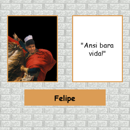
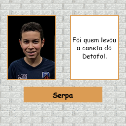
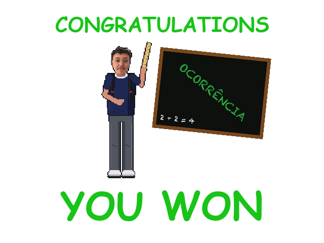

The class
Click a poster to hear them

Felipe
Serpa
Feedback
Contact: ruansbasics@gmail.com
We're the school principals.
João Gabriel joagvv and Bryan Castelucci Bryan_Games1005

Ruan's Basics made by
João Gabriel and Bryan Castelucci
Original game, music and voices by Micah McGonigal, Basically Games.
Based on Baldi's Basics Classic, made for the 2018 Meta Game Jam.
Ruan's Basics is a free, non-profit fan mod. It is not official and not affiliated with Basically Games. Baldi's Basics and its characters belong to their creators.